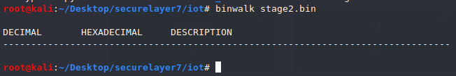

s33k3r :
Description:
You work at the NSA, and recently there was security breach in the network devices of Grand Coulee Dam hydroelectricpower plant. Transformers were shut off remotely since hackers had got access to PLC/SCADA systems via a backdoored WiFi router in one of the employee's office who received a phishing email containing malware which infected his computer and scanned internal network devices with default admin passwords. As a malware analyst you carefully examined the behavior of the program and found the download URL of encrypted firmware file which installed a backdoor on WiFI router for remote access. Your task is to decrypt the firmware image and find the backdoor.
End goal: Once you find backdoor binary just run it on 64-bit Linux machine, flag will be printed out.
binwalk before decryption :

[ To scan the files Recursively -M, –matryoshka ]
hexdump -C -v stage2.bin | head -n 10
hexdump -C -v stage2.bin | tail -n 5

After bit of research found out that this might be XOR encrypted .
Tried to decrypt it using :
import os #decryptxor.py
import sys
key = "746f6f72".decode("hex")
data = sys.stdin.read()
r = ""
for i in range(len(data)):
c = chr(ord(data[i]) ^ ord(key[i % len(key)]))
r += c
sys.stdout.write(r)
key used : toor : 746f6f72
cat stage2.bin | python decryptxor.py > out.bin
Decryption Done!!
binwalk after decryption :

Will extract now : binwalk -e out.bin

Found these three .
Found a squashfs file : Squashfs is a compressed read-only file system for Linux .
tried to use unsquash to unpackage it : but failed

Checking magic bytes : shsq

So we found a new tool called sasquatch : The sasquatch project is a set of patches to the standard unsquashfs utility (part of squashfs-tools) that attempts to add support for as many hacked-up vendor-specific SquashFS implementations as possible.
Remember to place the patches folder.
apt-get install build-essential liblzma-dev liblzo2-dev zlib1g-dev
./build.sh
sasquatch 14FE1C.squashfs
It worked!!!!!

We found a file named backdoor :
ls * | less

POC : After running that backdoor file we get out flag .
./backdoor

FLAG : flag{winner_winner_backdoor_dinner!}